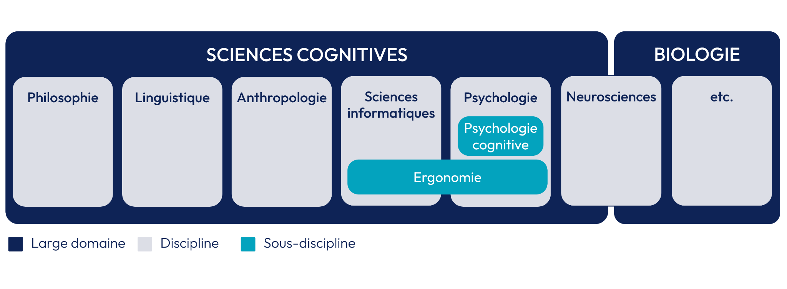

04 : Pour aller plus loin
Où se situe la psychologie cognitive dans les sciences cognitives ?
La compréhension du fonctionnement de l'être humain ne s'arrête pas aux
frontières de la psychologie cognitive. Une compréhension complète requiert
une approche interdisciplinaire, intégrant notamment les neurosciences. La
combinaison de ces deux disciplines permet d'explorer de manière holistique
les liens entre les processus mentaux et les bases biologiques du cerveau
(Gazzaniga, 2004 ; Hodent, 2020).
Comme le montre le schéma ci-dessous, la psychologie cognitive et les
neurosciences s'inscrivent dans un domaine plus vaste : les sciences
cognitives.

Représentation simplifiée des sciences cognitives et des disciplines qui
la composent | Source : créé par Nora Kabbani (2023).
Le domaine des sciences cognitives est interdisciplinaire : il explore
les mécanismes complexes de la pensée humaine en intégrant des perspectives
variées (psychologie cognitive, neurosciences, mais aussi linguistique,
sciences informatiques, intelligence artificielle et philosophie de l'esprit)
afin de comprendre comment notre cerveau traite l'information et génère des
comportements (Gazzaniga, 2004 ; Hodent, 2020).
Les neurosciences (branche des sciences cognitives et de la
biologie) plongent dans la structure anatomique du cerveau, les connexions
neuronales et les fonctions des différentes régions cérébrales. Elles
fournissent les bases essentielles aux processus cognitifs étudiés par la
psychologie cognitive (Gazzaniga, 2004 ; Lemaire & Didierjean, 2018).
La psychologie cognitive se concentre sur les aspects
comportementaux et mentaux, explorant la façon dont les individus acquièrent,
stockent, traitent et utilisent l'information (Hodent, 2022 ; Lemaire
& Didierjean, 2018).
L'ergonomie renvoie à l'étude des interactions
homme-machine. Elle naît notamment de l'interaction entre la psychologie
cognitive et les sciences informatiques : la conception centrée utilisateur
(UX design) peut être considérée comme une application de l'ergonomie
cognitive (Hodent, 2022).
En résumé : les sciences cognitives comprennent un ensemble de
disciplines dont font partie les neurosciences et la psychologie cognitive.
Leur objet d'étude commun est l'être humain, et plus spécifiquement les
processus mentaux et fonctions cognitives qui guident nos comportements et
attitudes : mémoire, perception, raisonnement, résolution de problème,
créativité, langage, etc.